Product card
Afterglow
$180
Brand guide · October 2026
The light only ever deepens.
There is no drawn logotype. The wordmark is the typeface, which keeps it reproducible by anyone holding this guide.
Construction
Set in Instrument Serif at 400, tracking 0, no optical adjustment. There is no drawn logotype: the wordmark is the typeface, which is what keeps it reproducible by anyone who has the guide.
Clear space
The cap height of the A on every side, measured from the bounding box of the word. At the minimum size of 96 px, or 24 mm in print, that is 24 px.
Six ways to break it. Each one is a thing the system cannot absorb, not a matter of taste.
Do not recolour
Outside the four stages and the two text neutrals.
Do not stretch
No horizontal or vertical scaling, ever.
Do not outline
No stroke, no shadow, no glow. Shadow is not in the system.
Do not stack
One line. The word does not break.
Do not set small on the fall
Below 24 px it fails its floor somewhere on the ramp.
Do not substitute
If the face is unavailable the wordmark is set as an image, not in a fallback.
One ramp. Lightness falls and chroma stays flat at 0.110 throughout, so the stages differ in depth rather than in intensity.
Gold of last light
After gold
Rose
Deep violet
CMYK is converted from sRGB for a proof, not matched. A Pantone is an inked colour under controlled light and cannot be derived from a hex, so each is left to be matched against a physical guide and written back here.
Every ratio is computed from the token. The body floor is 4.5:1 and the large-text floor is 3:1; a role is what the number allows.
| Stage | On void | On #141414 | On #2B2B2B | Text on it | Role |
|---|---|---|---|---|---|
| Gold of last light | 9.97:1 | 9.17:1 | 7.05:1 | 1.70:1 | Text, marks, rules |
| After gold | 5.26:1 | 4.84:1 | 3.72:1 | 3.23:1 | Text, marks, rules |
| Rose | 2.66:1 | 2.44:1 | 1.88:1 | 6.40:1 | Ground only |
| Deep violet | 1.41:1 | 1.30:1 | 1.00:1 | 12.01:1 | Ground only |
Clears the body floor on the void at 9.97:1. Usable as a letterform at any size, in any medium.
Clears the body floor on the void at 5.26:1. Usable as a letterform at any size, in any medium.
Reads 2.66:1 on the void, under every text floor. A ground, never a letterform.
Reads 1.41:1 on the void, under every text floor. A ground, never a letterform.
Six tokens that are not on the ramp. Elevation is carried by the two surface steps, which is why there is no shadow in the system.
| Token | Value | OKLCH L | CMYK | Use |
|---|---|---|---|---|
| Ground | #080808 | 0.134 | 0 0 0 97 | Page ground. Required by the deepening-light rule, not borrowed |
| Surface, recessed | #141414 | 0.191 | 0 0 0 92 | Recessed panels |
| Surface, raised | #2B2B2B | 0.289 | 0 0 0 83 | Cards and raised panels |
| Text | #EEECEA | 0.944 | 0 1 2 7 | Primary text |
| Muted | #C0C0C0 | 0.808 | 0 0 0 25 | Secondary text |
| Border | rgba(192,192,192,0.22) | n/a | n/a | Hairline |
The gradient is an asset with a specification, not an effect applied by eye. This page is an instance of it.
Rules
Both are in Shopify's library, so neither ships as a webfont. The scale is a ratio, not a list.
Display
Afterglow
Instrument Serif · 400 · headings and the wordmark
Body
Afterglow
Space Grotesk · 400 · everything else
The same hierarchy in both media, so a layout moves between them without being redrawn.
| Role | Screen | Leading | Tracking | |
|---|---|---|---|---|
| Display | 61.04–39.06 px | 36–72 pt | 1.02 | −0.015 em |
| Heading | 31.25 px | 18–24 pt | 1.1 | −0.01 em |
| Body | 16 px | 9.5–11 pt | 1.55 | 0 |
| Caption | 12.8 px | 7–8 pt | 1.45 | 0.08 em |
| Label | 12.8 px uppercase | 7 pt uppercase | 1.3 | 0.12 em |
Both media
Sizes are authored in rem on screen so a reader's font-size preference is respected, and in points in print. The ratio is the same 1.25 in both, from a 16 px base, so a layout can be moved between them without redrawing the hierarchy.
Twelve columns in both media and one spacing base that divides the type base.
| Measure | Screen | |
|---|---|---|
| Columns | 12 | 12 |
| Gutter | 24 px | 4 mm |
| Margin | 32–64 px | 12 mm |
| Baseline | 8 px | 4 mm |
| Max measure | 58 ch | 58 ch |
Spacing
A 8 px base and whole multiples of it. Eight divides the 16 px type base, so space and text sit on one grid rather than two that nearly agree.
Three values and the only rule in this document that can be checked automatically.
Radius
0
Square. Restraint and a dark ground point there.
Shadow
none
Elevation reads through the two surface steps.
Motion
450 ms
cubic-bezier(0.2, 0, 0.2, 1). Ends at its destination, never passes it.
The one rule
No state change brightens.
On screen that is hover, focus and active: they deepen or shift hue and never lighten. In print and in film it is the same rule about sequence: a later panel is never lighter than the one before it. It is the only rule here that can be checked in a diff, which is why it is written this way and not as a sentence about mood.
The palette is a description of light at a particular hour. Images are made to match it rather than graded toward it afterwards.
One light source, and it is falling.
Images are made at the end of the day or lit to look as though they were.
The upper quartile of an image's lightness sits at or below the gold of last light, L 0.781.
Up to a quarter of the frame may pass it; the rest may not.
Warm to cool across a set, never back.
A sequence follows the ramp in the same direction the ramp runs.
Grade toward the stages rather than to neutral.
The palette is where the shadows and the highlights land.
Nothing is brightened in post.
Exposure is lifted at capture or the frame is not used.
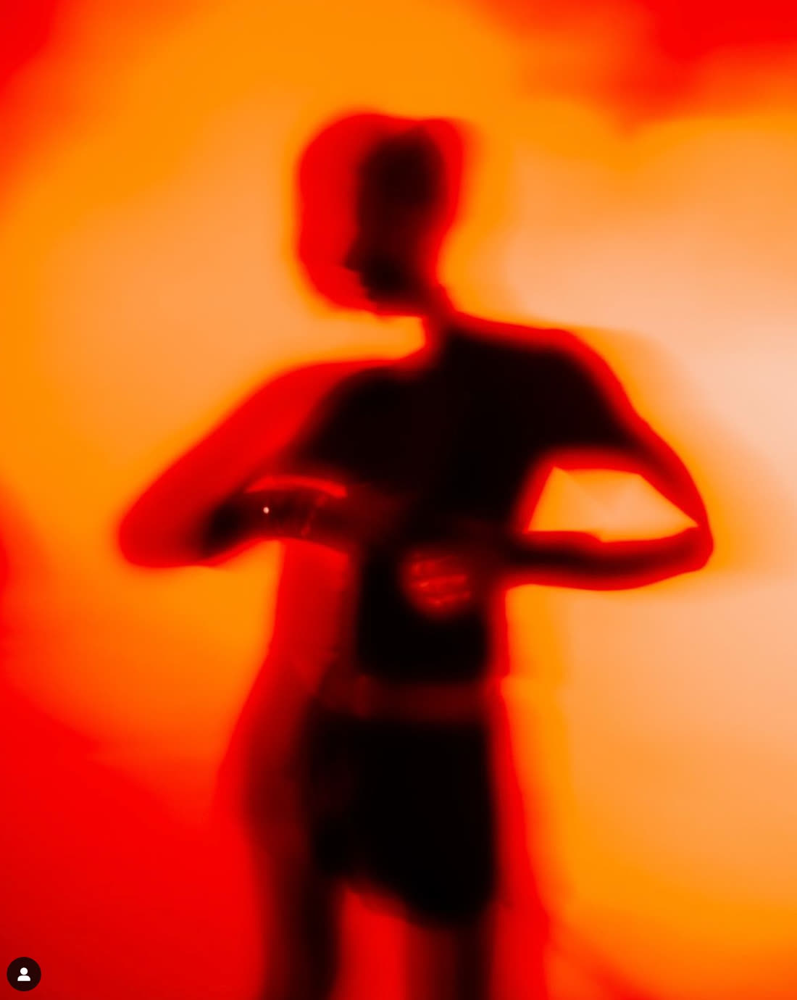
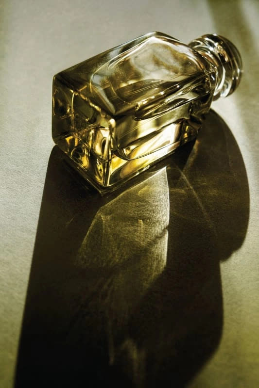
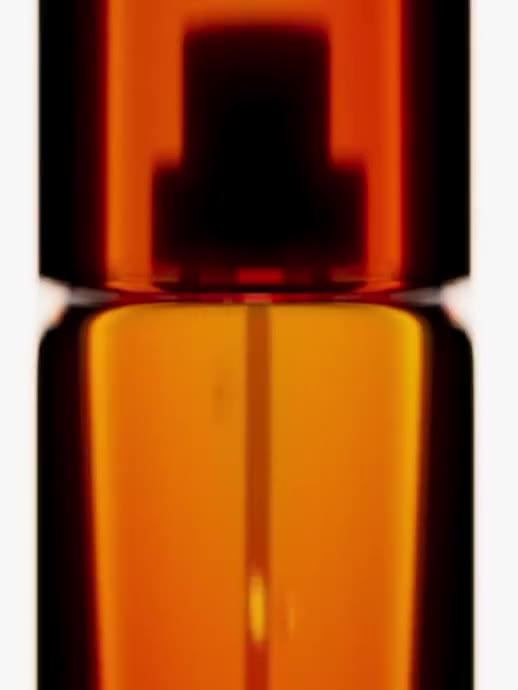
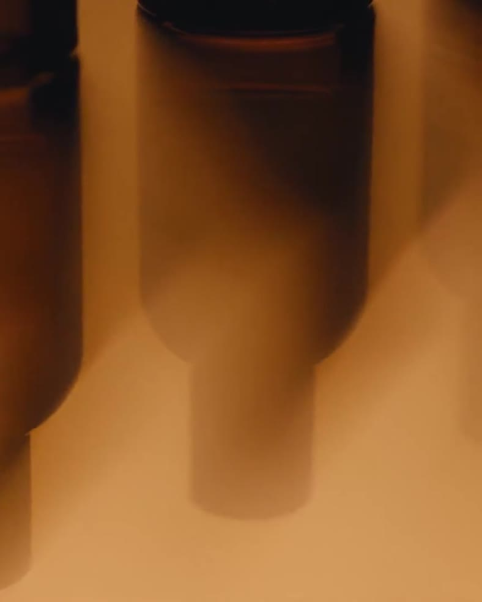
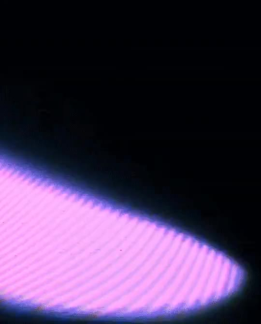
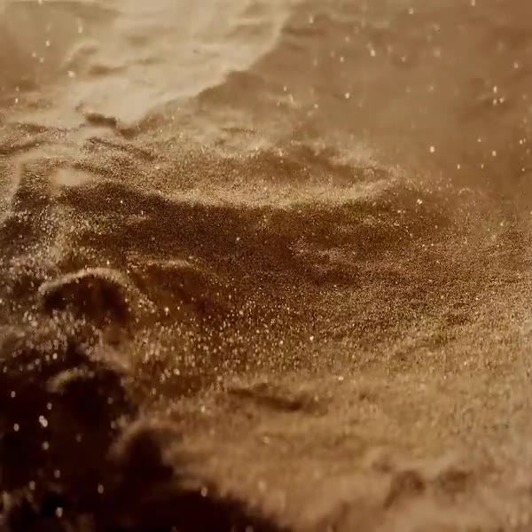
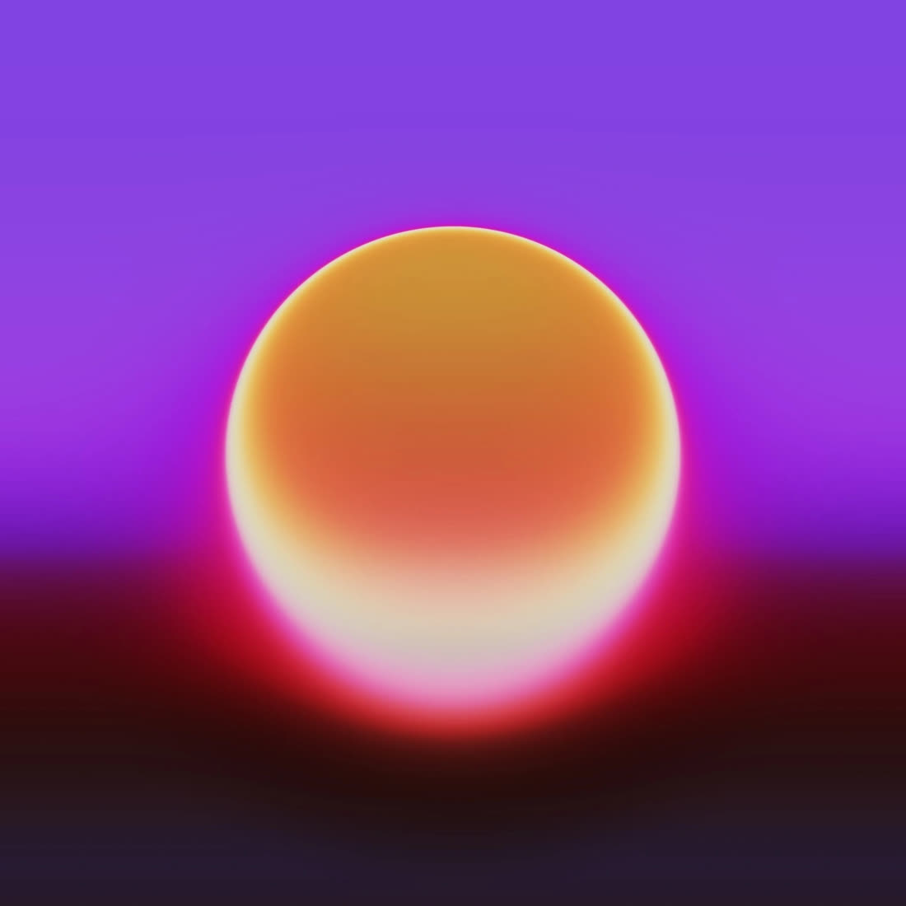
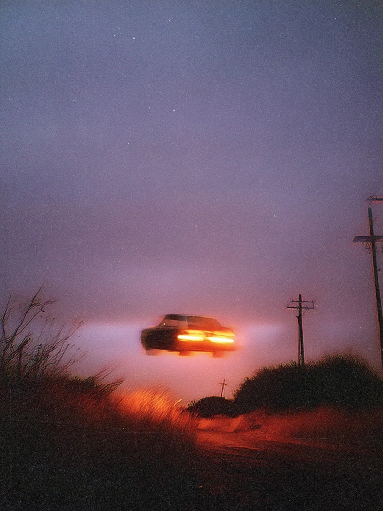
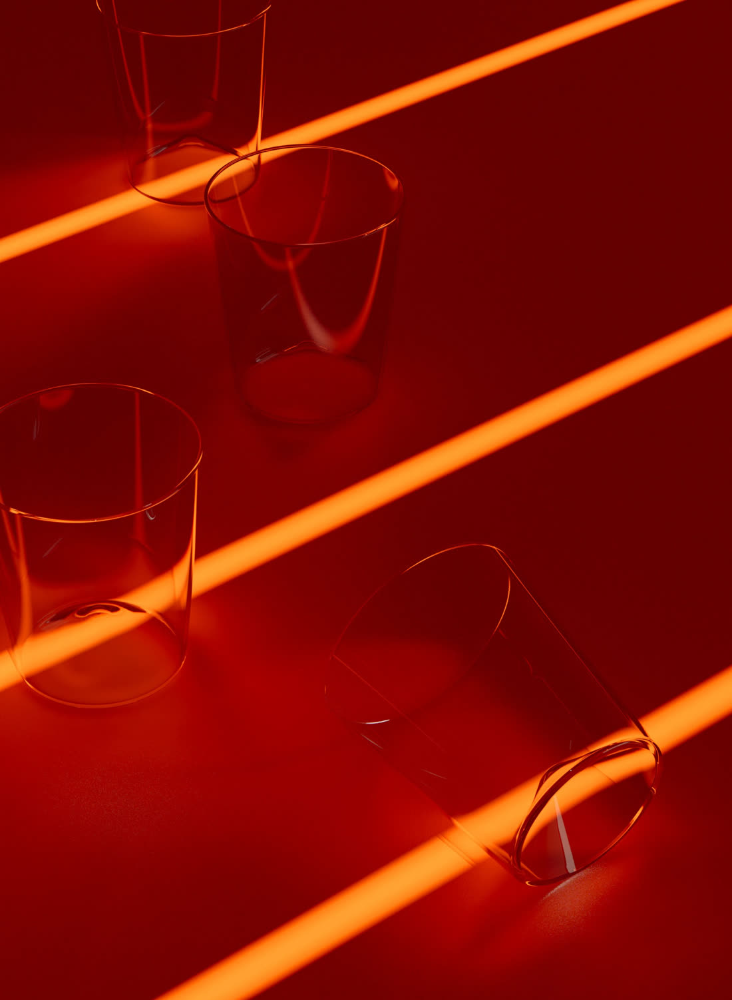
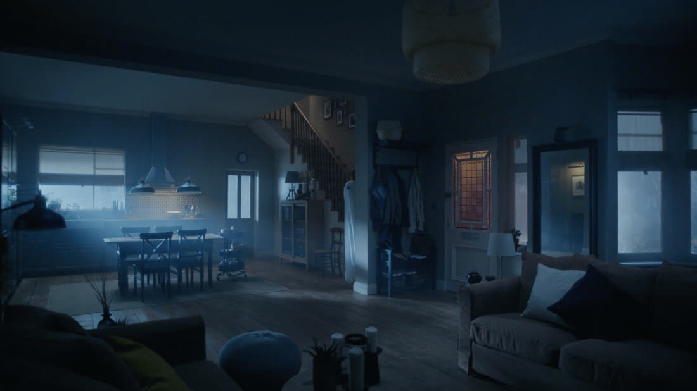
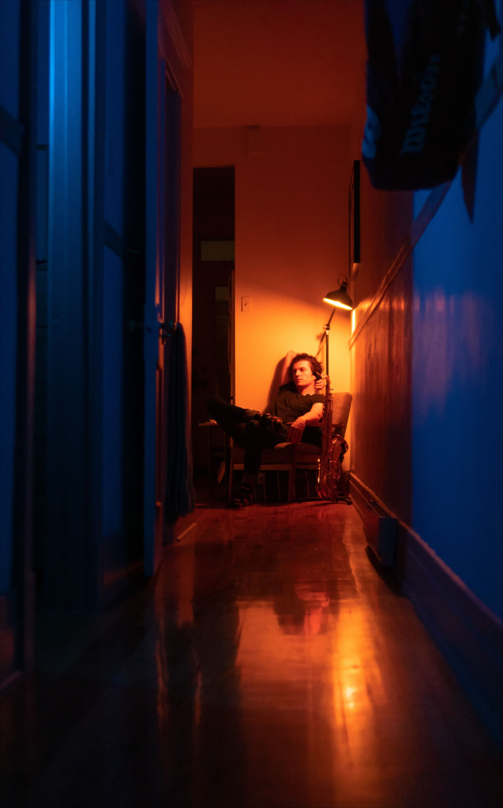
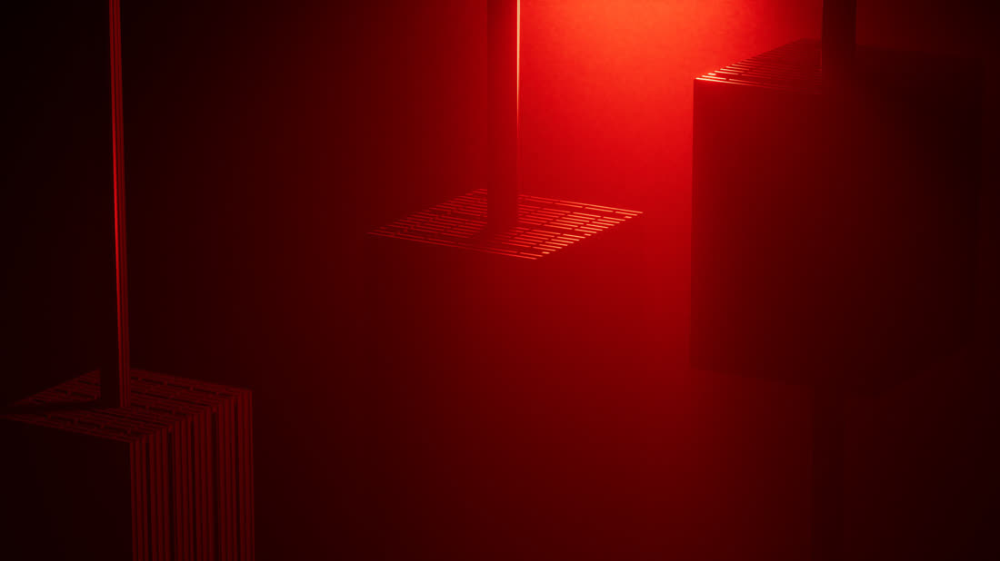
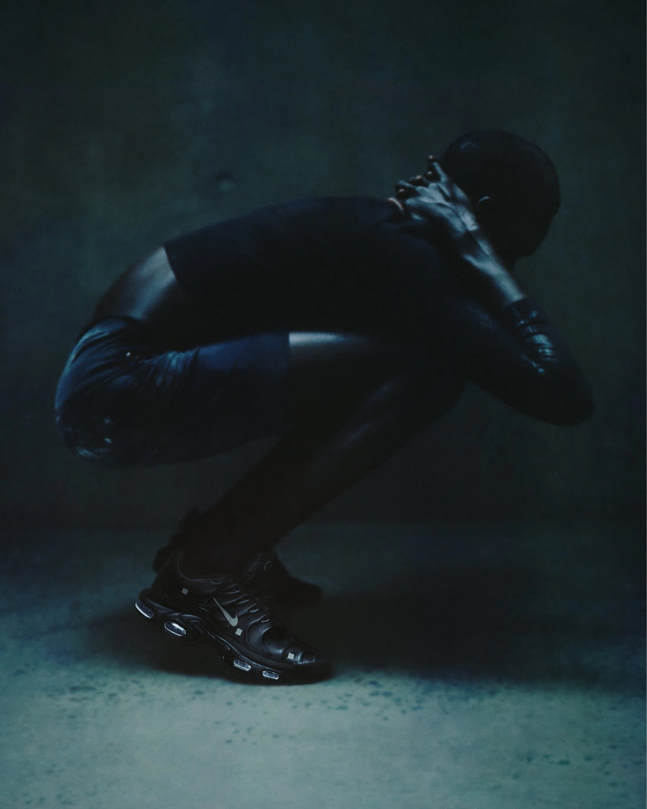
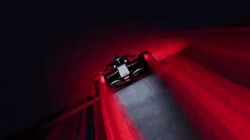
Six ways to break the five rules. Each tile is built from tokens, so none of them is a photograph that would have to clear the ceiling.
Two light sources
Breaks one light source, and it is falling.
Flat light
Breaks one light source, and it is falling: nothing falls.
Over-lit frame
Breaks the upper quartile at or below gold: over a quarter of it passes.
Reversed set
Breaks warm to cool, never back.
Graded to neutral
Breaks grade toward the stages rather than to neutral.
Lifted in post
Breaks nothing is brightened in post: the shadows are raised.
The three things a storefront is mostly made of, in the tokens, and the imagery they sit with.
Product card
Afterglow
$180
Button, rest and hover
Hover deepens: L 0.781 to L 0.630
Surface steps
What the fall needs from a press, and what will break it.
Card, 85 × 55 mm
Label face
Poster, 2:3
Production
The visual system and the voice stop in the same place, which is not an accident.
Voice
Unhurried and physical. It names heat, light, breath and skin. It describes a sequence, because the product is a sequence. Certain without pushing: the brand does not argue for itself, and assumes you will understand it if you are shown it in the right order.
Where the rules stop
Cart, checkout, shipping notices, legal and safety copy are plain and fast. The atmosphere stops there on purpose, exactly as the voice does. Applied to a payment form or a warning label the discipline makes it worse.
Elsewhere
The full voice, the word lists and the tone by context live in voice-tone.md. Event art direction for the launch is in the brief and governs that night only; nothing in it binds the brand.